If you are new to Playdate or just want some game recommendations here is a list of my top Playdate games (as of 3/6/2026). These are the ones I enjoyed the most, I try to buy and play other Playdate games when I am not actively developing anything. I am not including anything I was involved with or anything from Season 1 since you get all those games automatically with the device. There are some great games in the first season. Anyway, here is the list:
Tiny Turnip - Tiny Turnip is a climbing adventure that beautifully integrates all of the Playdate's controls. You play as a small turnip exploring a large map filled with different obstacles and secrets. The game introduces fresh mechanics and plenty of collectibles. Your turnip has a variety of moves including climbing, swimming, rolling, and flinging. The experience is beautifully crafted and well balanced, with a memorable soundtrack that evolves as you discover new areas of the map.
Devils On The Moon Pinball - Devils On The Moon Pinball is a beautifully, meticulously crafted masterpiece for Playdate, painstakingly assembled by Amano Games. The pinball table is densely packed with pixel detail and features plenty of nooks and crannies for the ball to interact with. The playfield spans three levels, and the goal is to enter the castle at the top of the screen. The game offers plenty of content to unlock, online leaderboards, and elegant physics that will delight any pinball enthusiast. There's a guide for the game that can help outline what all the parts of the pinball table do and how they interact with the ball.
Root Bear - Root Bear is a Playdate staple that challenges you to create the perfect pour. The goal is to top off your customer's glass and see how many perfect drinks you can craft under different constraints. The animation is absolutely top-notch and the game features online leaderboards so you can compare your bartending skills with other players. The crank controls the flow of the tap, making the game a creative showcase for the Playdate and a title that is almost universally loved by the community.
Fulcrum Defender - Fulcrum Defender is a simple defense-style shooter where you protect the center of the screen from a wide variety of enemies. The game is easy to learn and offers a large selection of power-ups. The most exciting part is how the game evolves as your enemy count rises, rewarding you with more perks and abilities. The soundtrack complements the action perfectly as you fight to maintain control of the center. To technically "win" you only need to survive for 10 minutes, but you can keep playing longer and your local scores are tracked.
Under The Castle - Under The Castle is my favorite turn-based RPG on the Playdate. The game features three main modes: eliminating enemies, collecting light orbs, and rescuing villagers. Each playthrough generates a new dungeon layout and offers a wide variety of weapons, shields, and items to experiment with. Along the way you'll encounter different enemy types, traps, and obstacles. The world is beautifully animated, with characters, buildings, and objects that feel individually crafted as part of a larger connected world.
Dig! Dig! Dino! - Dig! Dig! Dino! tasks players with uncovering dinosaur bones and buried treasure. My kids absolutely adored this game. I never got much time to play it myself, but watching them dig and discover new fossils was always entertaining. The cheerful music adds a playful atmosphere to this part-time paleontology adventure.
Icy Dungeon - Icy Dungeon features 70 carefully designed levels that keep the challenge fresh and engaging. Every step you take leaves behind a trail of solid ice, so you have to think carefully about how to reach the exit. New items and obstacles are introduced as you progress, and the game does an excellent job teaching the core mechanics early on so the difficulty never feels frustrating.
Water Flow - Water Flow is a deceptively simple puzzle game where the goal is to keep the water running. You control the pipes that appear on the screen, trying to maintain the flow even when the pieces don't quite line up the way you want. The mechanics are straightforward but surprisingly addictive, and you can compare your plumbing skills with other Playdate players.
Cannonball Kid began as a simple puzzle-driven game and evolved into a beautifully animated story about a kid trying to save Earth from an alien invasion. In the game, you help Cannonball Kid shoot down alien ships by hacking into their network and manipulating the fields displayed on the screen. Different field types alter the trajectory of the cannonballs the kid fires, creating a unique puzzle-shooter experience that grows increasingly challenging as you progress.
The game features five distinct areas (or four if you skip the tutorial) and culminates in a mini-boss battle against the alien mothership. Cannonball Kid has two possible endings: a good ending and a bad ending. If the player triggers a Game Over at any point, the game automatically concludes with the bad ending. Successfully completing all levels without a Game Over unlocks the good ending, and the menu display updates from the default alien artwork to one of three campaign awards.
Playing the game is simple, just select the tutorial at the beginning of the game. If you skipped the tutorial the main fields you interact with during the game have a black background and will be pointing north, south, east, or west. You use the Playdate's crank to scroll through the interactive fields and change their direction so that you can hit the alien ships with Cannonball Kid's cannonball. The selected field will be highlighted, just change the direction using the d-pad to your desired direction. Other fields will just change the cannonball's direction but cannot be changed with the d-pad. For example, static fields do not move or change, rotating fields rotate 90 degrees after they change the cannonball's direction, and holographic fields change the cannonball's direction but are destroyed upon impact. Figuring out how to hit the alien ships is key.
Cannonball Kid Game Guide (Click Game Art Below):
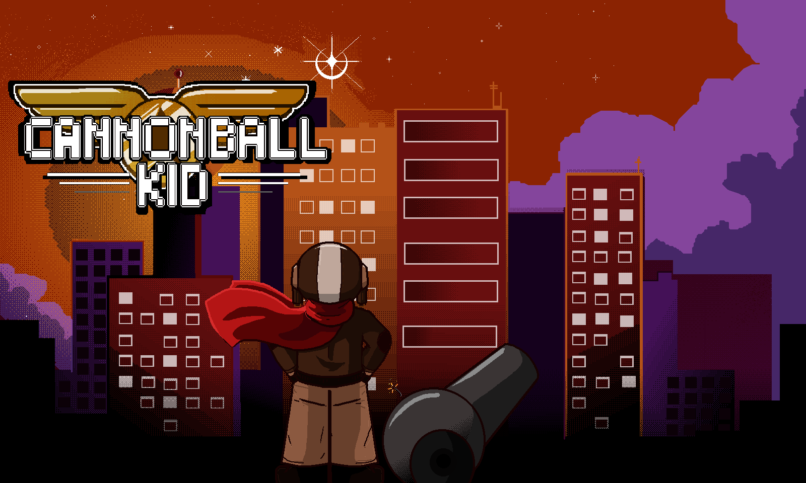
Cannonball Kid Screenshots:
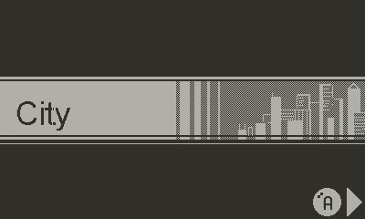
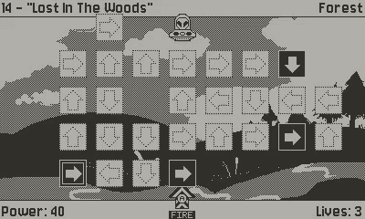
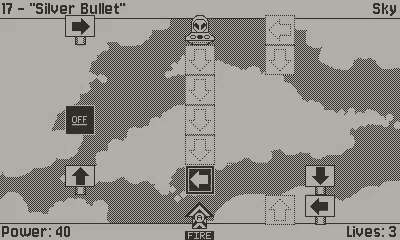
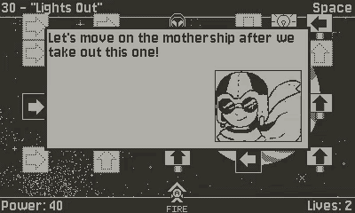
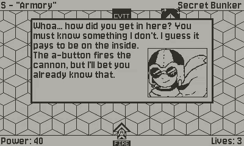
Fortress was my first major project for the Panic Playdate. I created the game in Pulp, and my sister contributed the vast majority of the art. It was an absolute blast to make! The game is packed with secrets, collectibles, enemy types, and puzzles. You can buy the game on catalog now.
The reference sheet for the game is below. You can save the image to your desktop or zoom in on your browser to read it. Destination Playdate also created a walkthrough of the game, a link to it is provided below too.
Destination Playdate's Video On Fortress:
The Official Fortress Game Guide:
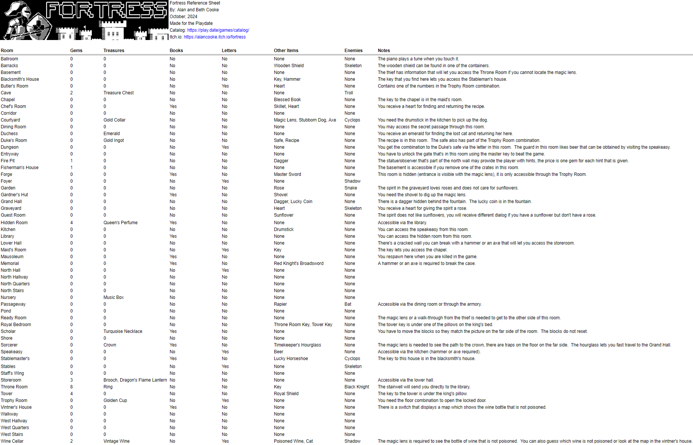
Fortress Screenshots:
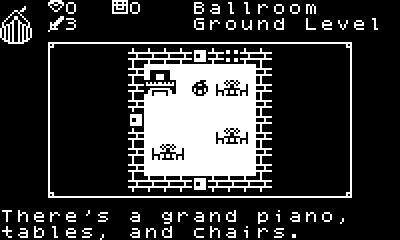
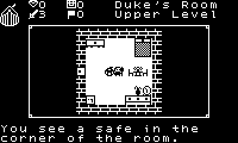
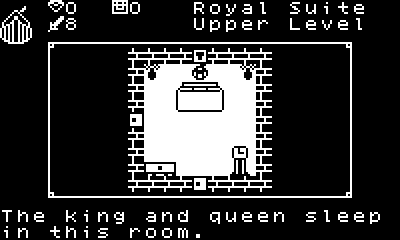
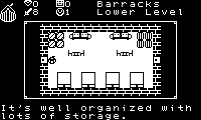
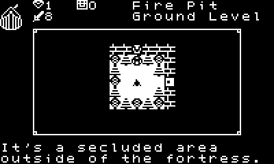
Concept Sketches For Fortress:

A fresh take on a classic brick breaker game with different power-ups... in development!